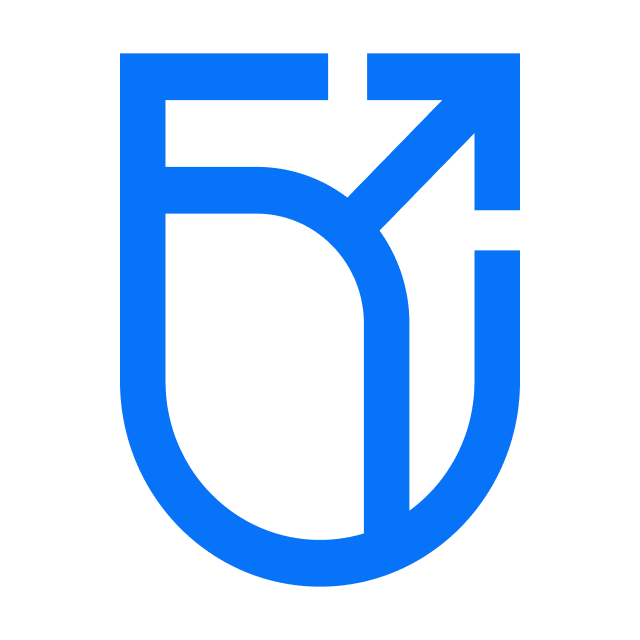

NewtonSchool Studio
Problem-to-production engineering
From a hard problem to software in production.
One accountable technical owner and a focused engineering pod take your problem through architecture, build and deployment, then hand over the code and everything needed to run it.
Pods pair an accountable technical owner with full-time Newton School of Technology engineers, backed by engineering leadership from Google, Goldman Sachs, Siemens, Autodesk and CRED.
Next step
Start with a 20-minute scoping call
We agree the problem, the right first engagement and what the first phase delivers. You get a written scope to review.
What we take on
Each one already shipped
01New products and first releasesA validated idea or stalled prototype taken to a product people rely on. Proof: Zuvees
02Internal tools and operationsSpreadsheets and paper replaced with one system built around real roles. Proof: RishiVerse
03AI features with human reviewVision, document and agent workflows with confidence, overrides and cost control. Proof: FieldVue
04Integrations and platform workMarketplaces, warehouses, payments and identity kept in sync. Proof: Zuvees
05Rescue and modernisationSlow, fragile or costly systems stabilised with a plan your team can continue. Proof: RishiVerse
06Applied technology researchMessy data or an open question turned into evidence and a decision. Proof: IIT Roorkee
How we work
You sign off at every gate
01One accountable technical ownerOwns the outcome, the architecture and the trade-offs, and is your single point of contact.
02A focused engineering podProduct, backend, data, quality and deployment move in parallel, not one after another.
03AI-accelerated, human-verifiedAI speeds up exploration and implementation. People review every change and own release decisions.
04Working software every weekWeekly demos of running software, with a written plan and change log you can follow.
Gate 01Problem contractOutcome, users and constraints agreed
Gate 02System contractArchitecture and scope signed off
Gate 03Executable acceptanceTests that prove it works
Gate 04Production evidenceRunning with real users and data
Gate 05Ownership transferCode, docs and access handed over
Work we’ve delivered
Full case studies at newtonschool-studio.newtonschool.co
Quick commerce · DubaiZuveesShopify for checkout, our order and inventory system around it: 5 channels, one inventory, a 60-minute promise.
Higher educationRishiVerseUniversity ERP with 25+ modules: 80% less manual admin work and 99.8% uptime.
Public sector · with SSFIIT RoorkeePortal matching citizens to welfare schemes, with scrapers for 13 states. Fully handed over.
AI · North AmericaFieldVueAI estimates for painting contractors, with confidence scores, overrides and tiered pricing.
Ways to start
Fixed scope, priced on the agreed outcome. Tighter budget? We phase delivery.
| Problem and Architecture Sprint | The right system is not yet clear | 2–3 wks |
| Production Pilot | Prove one critical workflow with real users | 4–8 wks |
| Product Build | Take a full product or platform to production | 8–16 wks |
| System Rescue and Acceleration | A live system is slow, fragile or stuck | 4–8 wks |
| Managed Product System | Keep a live system improving and supported | Monthly |
| Applied Technology Research | A technical question needs evidence before a build | Scoped |
Data and ownershipNDA for every pod member · We work in your repositories and cloud · No live customer data without written approval · Approved AI tools only · Access removed at handover · You own the code